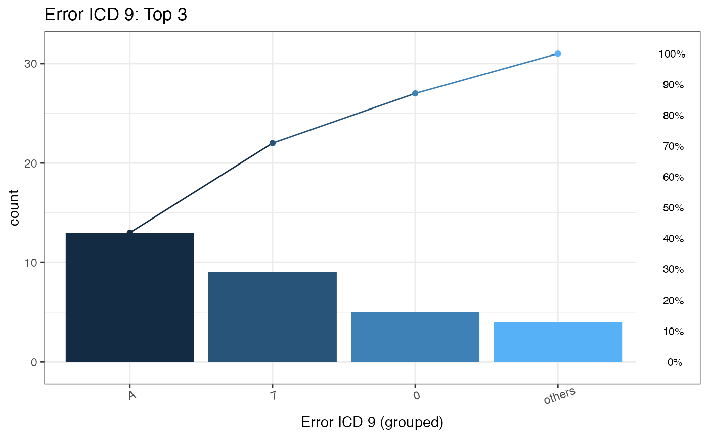
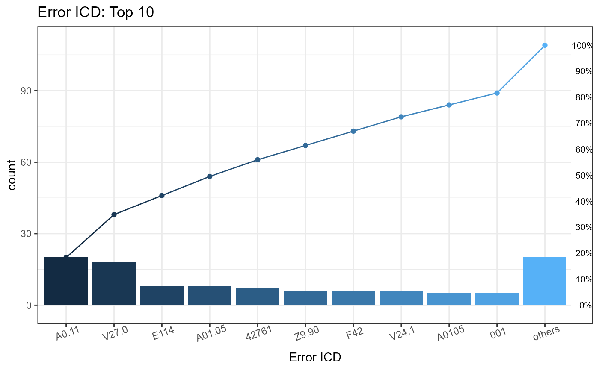

Pareto chart of error ICD list
plotICDError(
errorFile,
icdVersion = all,
wrongICDType = all,
groupICD = FALSE,
others = TRUE,
topN = 10
)Error file (a data frame) from ICD uniform functions dxUniform (icdDxDecimalToShort or icdDxShortToDecimal)
Certain wrong type that interested. The value can either version, format, or all, and this argument is the also string data type without quotation mark.
Binary data type. Only ICD-9 codes can group because ICD 10 already has unique alphanumeric codes to identify known diseases. Default is FALSE.
Default is TRUE
Numeric argument. Default is 10 (Top 10; 10 most common wrong ICD).
Certain version that interested. The argument should be string data type: 9, 10 or all (without quotation mark).
A Pareto plot and a data.table of statistical information about error codes.
Through first phase function, code standardization, it detects diagnosis codes with potential error. The Pareto chart includes bar plot and line chart to visualize individual possible error ICD codes represented in descending order and cumulative total.
other plot function: plotDiagCat
# sample file for example
head(sampleDxFile)
#> ID ICD Date Version
#> 1: A2 Z992 2020-05-22 10
#> 2: A5 Z992 2020-01-24 10
#> 3: A8 Z992 2015-10-27 10
#> 4: A13 Z992 2020-04-26 10
#> 5: A13 Z992 2025-02-02 10
#> 6: A15 Z992 2023-05-12 10
# Data of diagnosis codes with potential error
error <- icdDxDecimalToShort(sampleDxFile, ICD, Date, icdVerColName = NULL, "2015/10/01")
#> Wrong ICD format: total 9 ICD codes (the number of occurrences is in brackets)
#> c("A0.11 (20)", "E114 (8)", "Z9.90 (6)", "F42 (6)", "001 (5)", "75.52 (4)", "755.2 (3)", "123.45 (3)", "7552 (2)")
#>
#> Wrong ICD version: total 7 ICD codes (the number of occurrences is in brackets)
#> c("V27.0 (18)", "A01.05 (8)", "42761 (7)", "V24.1 (6)", "A0105 (5)", "E03.0 (4)", "650 (4)")
#>
#> Warning: The ICD mentioned above matches to "NA" due to the format or other issues.
#> Warning: "Wrong ICD format" means the ICD has wrong format
#> Warning: "Wrong ICD version" means the ICD classify to wrong ICD version (cause the "icd10usingDate" or other issues)
# Plot of top 3 common error ICD-9 codes and a list of the detail of error ICD codes
plotICDError(errorFile = error$Error,
icdVersion = 9,
wrongICDType = all,
groupICD = TRUE,
others = TRUE,
topN = 3)
#> Warning: `guides(<scale> = FALSE)` is deprecated. Please use `guides(<scale> = "none")` instead.
#> $graph

#>
#> $ICD
#> ICDGroup groupCount CumCountPerc MostICDInGroup ICDPercInGroup WrongType
#> 1: A 13 41.94% A01.05 61.54% Wrong version
#> 2: 7 9 70.97% 75.52 44.44% Wrong format
#> 3: 0 5 87.1% 001 100% Wrong format
#> 4: others 4 100% E03.0 100% Wrong version
#>
# Plot of top 10 common error ICD codes and a list of the detail of error ICD codes
plotICDError(errorFile = error$Error,
icdVersion = all,
wrongICDType = all,
groupICD = FALSE,
others = TRUE)
#> Warning: `guides(<scale> = FALSE)` is deprecated. Please use `guides(<scale> = "none")` instead.
#> $graph

#>
#> $ICD
#> ICD count CumCountPerc IcdVersionInFile WrongType Suggestion
#> 1: A0.11 20 18.35% ICD 10 Wrong format
#> 2: V27.0 18 34.86% ICD 10 Wrong version
#> 3: E114 8 42.2% ICD 10 Wrong format
#> 4: A01.05 8 49.54% ICD 9 Wrong version
#> 5: 42761 7 55.96% ICD 10 Wrong version
#> 6: Z9.90 6 61.47% ICD 10 Wrong format
#> 7: F42 6 66.97% ICD 10 Wrong format
#> 8: V24.1 6 72.48% ICD 10 Wrong version
#> 9: A0105 5 77.06% ICD 9 Wrong version
#> 10: 001 5 81.65% ICD 9 Wrong format 0019
#> 11: others 20 100% ICD 9 Wrong format
#>